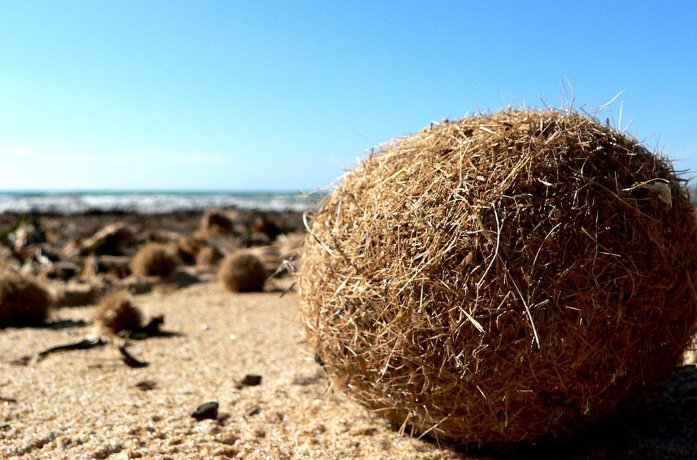
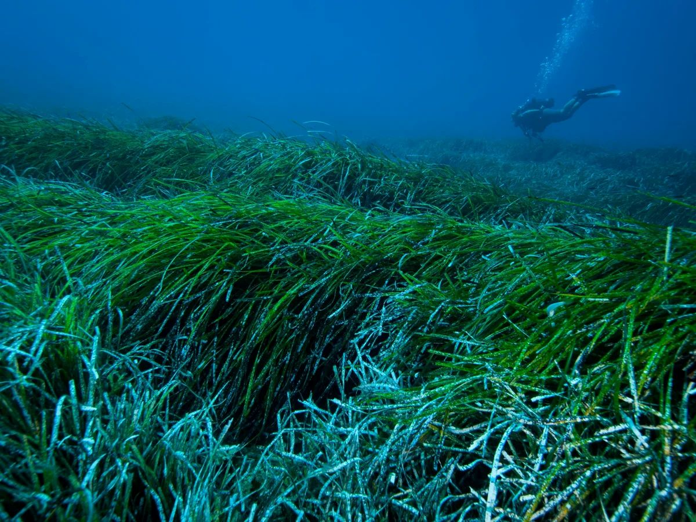
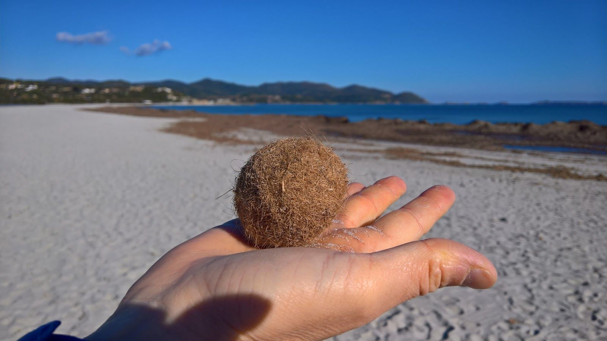

Wat zijn die bruine ballen?
Op de stranden van Kos kom je regelmatig bruine, ronde vezelbollen tegen. Dit zijn Posidonia-ballen – een natuurlijk verschijnsel van de zeeplant Posidonia oceanica (Mediterraan zeegras).
Die bruine ballen op het strand – geen afval, maar natuur.

Op de stranden van Kos kom je regelmatig bruine, ronde vezelbollen tegen. Dit zijn Posidonia-ballen – een natuurlijk verschijnsel van de zeeplant Posidonia oceanica (Mediterraan zeegras).

Oude bladeren en vezels van het zeegras raken los en worden door golven en stroming heen en weer gerold. Zo vormen zich compacte, ronde ballen die op het strand aanspoelen.

Hoewel ze er soms vreemd uitzien, zijn ze een teken van een gezond onderwaterleven. Zeegrasvelden produceren zuurstof, beschermen vissen en helpen de kust tegen erosie.
Those brown balls on the beach – not rubbish, pure nature.
On Kos beaches you’ll often find brown, round fibre balls. These are Posidonia balls – a natural product of the seagrass Posidonia oceanica (Mediterranean seagrass).
Old leaves and fibres of the seagrass break loose and are rolled back and forth by waves and currents. That creates compact, round balls that wash up on the shore.
They may look odd, but they are a sign of healthy underwater life. Seagrass beds produce oxygen, shelter fish and help protect the coast from erosion.
Die braunen Kugeln am Strand – kein Müll, pure Natur.
An den Stränden von Kos findest du oft braune, runde Faserkugeln. Das sind Posidonia-Kugeln – ein Naturprodukt des Seegrases Posidonia oceanica.
Alte Blätter und Fasern lösen sich und werden von Wellen und Strömung gerollt. So entstehen kompakte Kugeln, die an den Strand gespült werden.
Sie sind ein Zeichen für gesundes Unterwasserleben. Seegraswiesen erzeugen Sauerstoff, schützen Fische und die Küste vor Erosion.
Quelle palle marroni sulla spiaggia – non sono rifiuti.
Sulle spiagge di Kos trovi spesso palle di fibre marroni. Sono palline di Posidonia – un fenomeno naturale della pianta marina Posidonia oceanica.
Foglie e fibre vecchie si staccano e vengono arrotolate dalle onde. Così nascono palle compatte che arrivano a riva.
Sono un segno di vita sottomarina sana. Le praterie di posidonia producono ossigeno e proteggono la costa.
Sahildeki kahverengi toplar – çöp değil, doğa.
Kos plajlarında sıkça kahverengi, yuvarlak lif topları görürsünüz. Bunlar Posidonia topları – deniz çimeni Posidonia oceanica’nın doğal ürünüdür.
Eski yaprak ve lifler kopar, dalgalarla yuvarlanır ve sıkı toplar halinde kıyıya vurur.
Sağlıklı su altı yaşamının işaretidir. Deniz çimeni oksijen üretir ve kıyıyı korur.
Esas bolas marrones en la playa – no son basura.
En las playas de Kos encuentras a menudo bolas de fibra marrones. Son bolas de Posidonia – un fenómeno natural de la planta marina Posidonia oceanica.
Hojas y fibras viejas se desprenden y las olas las van enrollando hasta formar bolas compactas que llegan a la orilla.
Son una señal de vida submarina sana. Las praderas de posidonia producen oxígeno y protegen la costa.